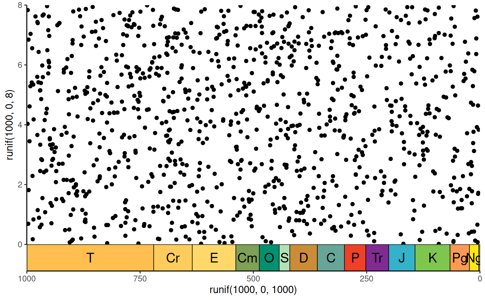
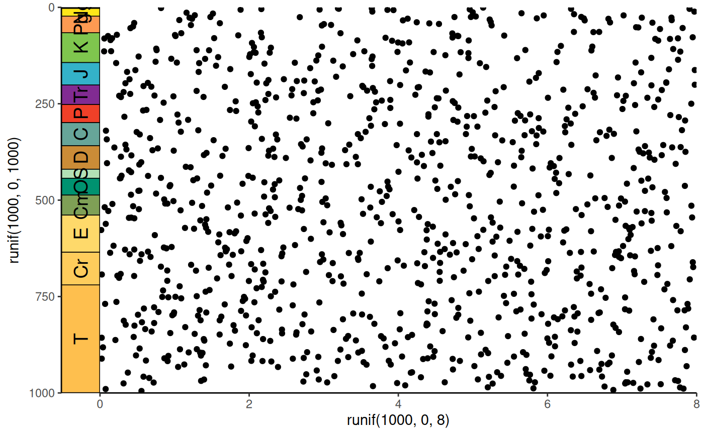
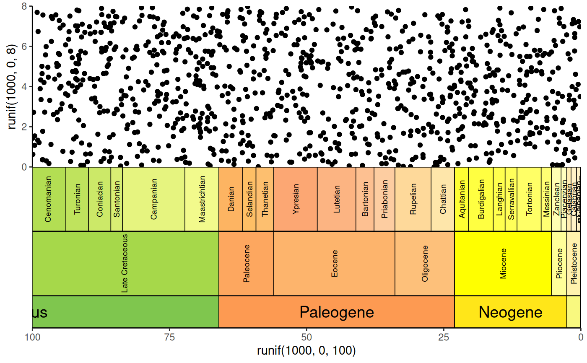
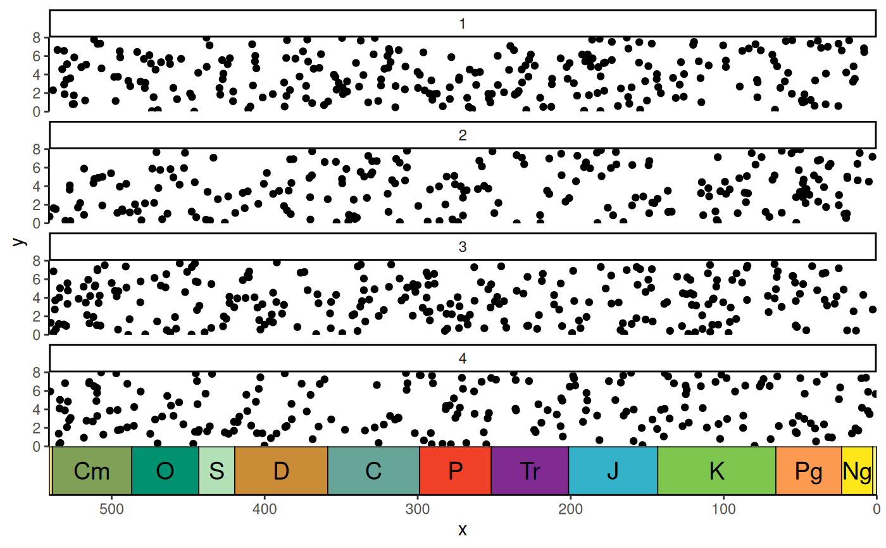
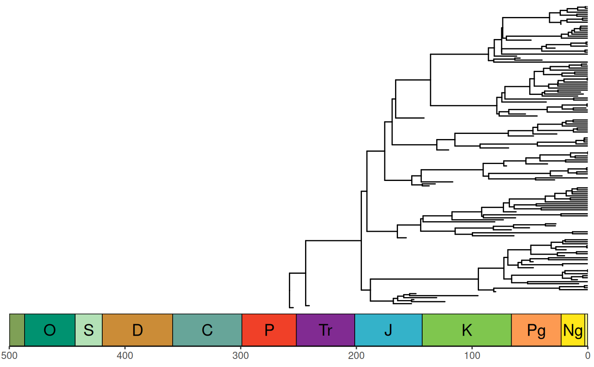

![[Deprecated]](figures/lifecycle-deprecated.svg)
This function takes a ggplot object and adds a geologic time scale at the specified side using the grid and gtable packages.
If custom data is provided (with dat), it should consist of at least 3
columns of data. See data(periods) for an example.
The
namecolumn lists the names of each time interval. These will be used as labels if no abbreviations are provided.The
max_agecolumn lists the oldest boundary of each time interval.The
min_agecolumn lists the youngest boundary of each time interval.The
abbrcolumn is optional and lists abbreviations that may be used as labels.The
colorcolumn is also optional and lists a hex color code (which can be obtained withrgb()) for each time interval.
Usage
gggeo_scale(obj, ...)
# S3 method for class 'gtable'
gggeo_scale(
obj,
lims,
dat = "periods",
fill = NULL,
color = "black",
alpha = 1,
height = unit(2, "line"),
pos = "bottom",
lab = TRUE,
rot = 0,
abbrv = TRUE,
skip = c("Quaternary", "Holocene", "Late Pleistocene"),
size = 5,
lwd = 0.25,
margin = unit(0, "line"),
neg = FALSE,
bord = c("left", "right", "top", "bottom"),
center_end_labels = FALSE,
...
)
# S3 method for class 'ggplot'
gggeo_scale(
obj,
dat = "periods",
fill = NULL,
color = "black",
alpha = 1,
height = unit(2, "line"),
pos = "bottom",
lab = TRUE,
rot = 0,
abbrv = TRUE,
skip = c("Quaternary", "Holocene", "Late Pleistocene"),
size = 5,
lwd = 0.25,
margin = unit(0, "line"),
neg = FALSE,
bord = c("left", "right", "top", "bottom"),
center_end_labels = FALSE,
...
)
# S3 method for class 'geo_scale'
gggeo_scale(
obj,
dat = "periods",
fill = NULL,
color = "black",
alpha = 1,
height = unit(2, "line"),
pos = "bottom",
lab = TRUE,
rot = 0,
abbrv = TRUE,
skip = c("Quaternary", "Holocene", "Late Pleistocene"),
size = 5,
lwd = 0.25,
margin = unit(0, "line"),
neg = FALSE,
bord = c("left", "right", "top", "bottom"),
center_end_labels = FALSE,
...
)
# S3 method for class 'geo_scale'
print(x, ...)Arguments
- obj
An object of class
ggplot,gtable, orgeo_scale(as produced by this function).- ...
further arguments passed to
grid::grid.draw().- lims
The limits of the axis of the desired side of the plot. Only required if using a gtable object not created by this function.
- dat
Either A) a string indicating a built-in dataframe with interval data from the ICS ("periods", "epochs", "stages", "eons", or "eras"), B) a string indicating a timescale from macrostrat (see list here: https://macrostrat.org/api/defs/timescales?all), or C) a custom dataframe of time interval boundaries (see Details).
- fill
The fill color of the boxes. The default is to use the colors included in
dat. If a custom dataset is provided withdatwithout color and without fill, a greyscale will be used. Custom fill colors can be provided with this option and will be recycled if/as necessary.- color
The outline color of the interval boxes.
- alpha
The transparency of the fill colors.
- height
The height (or width if
posisleftorright) of the scale.- pos
Which side to add the scale to (left, right, top, or bottom). First letter may also be used.
- lab
Whether to include labels.
- rot
The amount of counter-clockwise rotation to add to the labels (in degrees).
- abbrv
If including labels, whether to use abbreviations instead of full interval names.
- skip
A vector of interval names indicating which intervals should not be labeled.
- size
Label size.
- lwd
Line width.
- margin
The width of the margin around the returned object (can be a vector of length 4).
- neg
Set this to true if your x-axis is using negative values.
- bord
A vector specifying on Which sides of the scale to add borders (same options as
pos).- center_end_labels
Should labels be centered within the visible range of intervals at the ends of the axis?
- x
An object of class geo_scale.
Life cycle
This function is deprecated in favor of coord_geo() as of deeptime
version 1.0.0. It will be removed in a future release.
Examples
library(ggplot2)
# bottom scale by default
p <- ggplot() +
geom_point(aes(y = runif(1000, 0, 8), x = runif(1000, 0, 1000))) +
scale_x_reverse() +
coord_cartesian(xlim = c(1000, 0), ylim = c(0, 8), expand = FALSE) +
theme_classic()
gggeo_scale(p)
#> Warning: `gggeo_scale()` was deprecated in deeptime 1.0.0.
#> ℹ Please use `coord_geo()` instead.

# can specify any side of the plot
p <- ggplot() +
geom_point(aes(x = runif(1000, 0, 8), y = runif(1000, 0, 1000))) +
scale_y_reverse() +
coord_cartesian(xlim = c(0, 8), ylim = c(1000, 0), expand = FALSE) +
theme_classic()
gggeo_scale(p, pos = "left", rot = 90)

# can add multiple scales
p <- ggplot() +
geom_point(aes(y = runif(1000, 0, 8), x = runif(1000, 0, 100))) +
scale_x_reverse() +
coord_cartesian(xlim = c(100, 0), ylim = c(0, 8), expand = FALSE) +
theme_classic()
p <- gggeo_scale(p, abbrv = FALSE)
p <- gggeo_scale(p, dat = "epochs", height = unit(4, "lines"), rot = 90,
size = 2.5, abbrv = FALSE)
gggeo_scale(p, dat = "stages", height = unit(4, "lines"), rot = 90,
size = 2.5, abbrv = FALSE)

if (FALSE) { # \dontrun{
# intervals on both sides for different timescales (ICS stages vs North
# American Land Mammal Ages)
p <- ggplot() +
geom_point(aes(x = runif(1000, 0, 10), y = runif(1000, 0, 65))) +
scale_y_reverse() +
coord_cartesian(xlim = c(0, 10), ylim = c(65, 0), expand = FALSE) +
theme_classic()
p <- gggeo_scale(p, dat = "stages", pos = "left", height = unit(4, "lines"),
size = 2.5, abbrv = FALSE)
gggeo_scale(p, dat = "North American Land Mammal Ages",
pos = "right", height = unit(4, "lines"),
size = 2.5, abbrv = FALSE)
} # }
# can add scales to a faceted plot
# use gggeo_scale_old() if you have more than one column
df <- data.frame(
x = runif(1000, 0, 541), y = runif(1000, 0, 8),
z = sample(c(1, 2, 3, 4), 1000, TRUE)
)
p <- ggplot(df) +
geom_point(aes(x, y)) +
scale_x_reverse() +
coord_cartesian(xlim = c(541, 0), ylim = c(0, 8), expand = FALSE) +
theme_classic() +
facet_wrap(~z, ncol = 1)
gggeo_scale(p)

# can even add a scale to a phylogeny (using ggtree)
library(phytools)
#> Loading required package: maps
library(ggtree)
tree <- pbtree(b = .03, d = .01, n = 100)
p <- ggtree(tree) +
coord_cartesian(xlim = c(-500, 0), ylim = c(-2, Ntip(tree)),
expand = FALSE) +
scale_x_continuous(breaks = seq(-500, 0, 100),
labels = abs(seq(-500, 0, 100))) +
theme_tree2()
p <- revts(p)
gggeo_scale(p, neg = TRUE)
